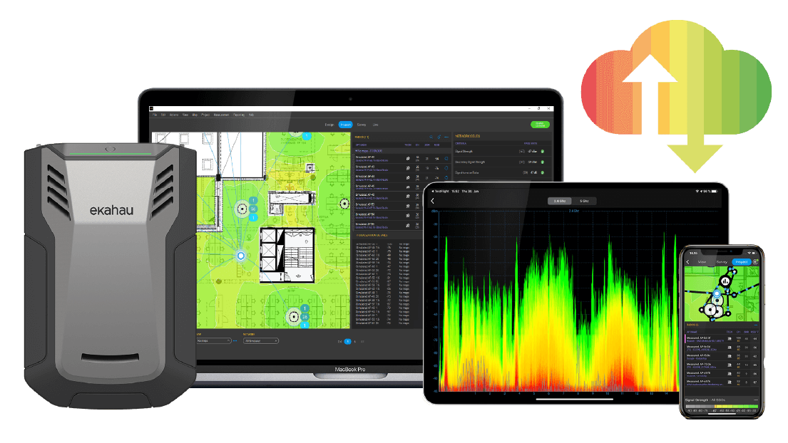
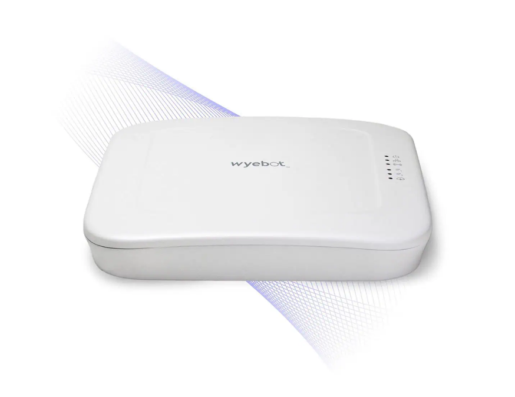

Leader nel settore, offre strumenti avanzati per la progettazione e l'analisi delle infrastrutture wi-Fi.
La svolta nella Rilevazione Wi-Fi. Strumento postatile per l'analisi Wi-Fi, garantisce un rilevamento preciso della copertura e delle interferenze.
L'Intelligenza Artificiale al Servizio del Wi-Fi. Software di progettazione Wi-Fi con capacità predittive basate su AI. Simulazioni dettagliate per la progettazione ottimale della rete.

Sensore installabile presso il cliente per il monitoraggio e il troubleshooting delle prestazioni della rete wired/wireless.